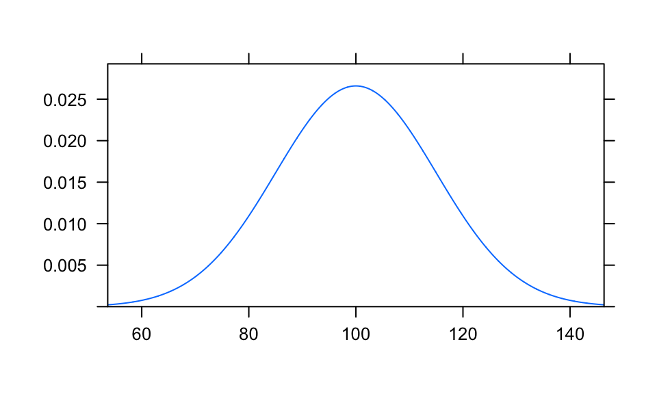
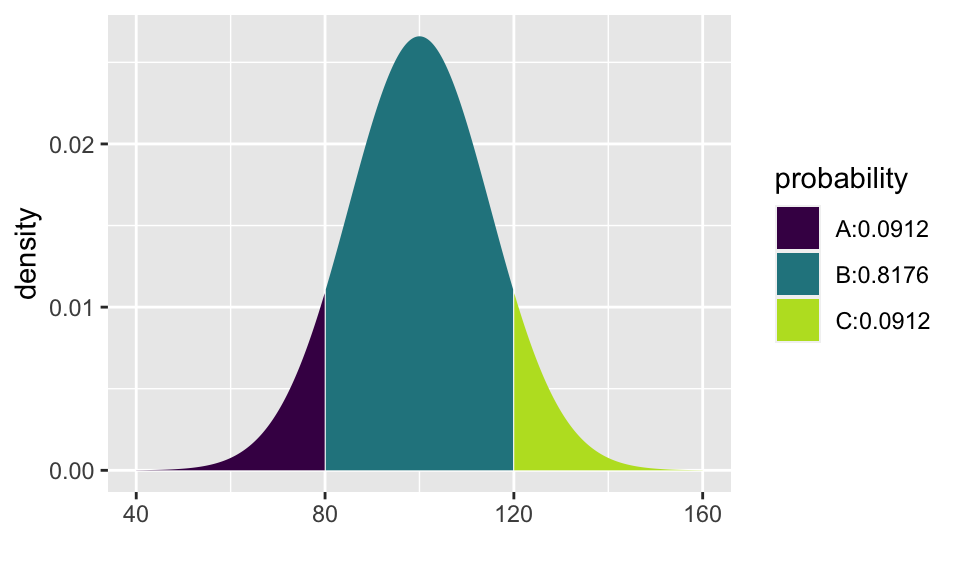
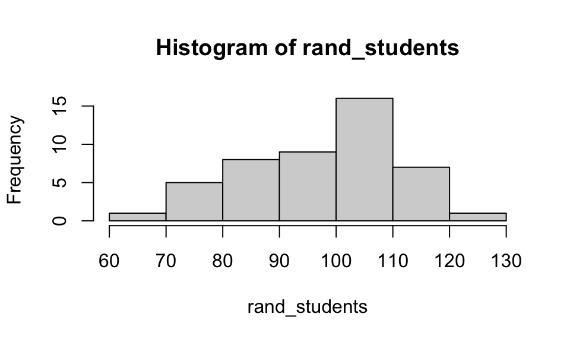

Math 152 - Statistical Theory - Homework 1
Important Note:
You should work to turn in assignments that are clear, communicative, and concise. So, for example, check the pdf file to make sure you don’t have extra pages of output. Additionally, remove these exact sentences and the information about HW scoring below.
Click on the Knit to PDF icon at the top of R Studio to run the R code and create a PDF document simultaneously. [PDF will only work if either (1) you are using R on the network, or (2) you have LaTeX installed on your computer. Lightweight LaTeX installation here: https://yihui.name/tinytex/]
Either use the college’s RStudio server (https://rstudio.pomona.edu/) or install R and R Studio on to your personal computer. See: https://research.pomona.edu/johardin/math152f20/ for resources.
General notes on homework assignments (also see syllabus for policies and suggestions):
- please be neat and organized, this will help me, the grader, and you (in the future) to follow your work.
- be sure to include your name on your assignment
- it is strongly recommended that you start / write out the questions as soon as you get the assignment. This will help you to start thinking how to solve them!
- for R problems, it is required to use R Markdown
- in case of questions, or if you get stuck please don’t hesitate to email me and use Discord for questions!!
Homework assignments will be graded out of 5 points, which are based on a combination of accuracy and effort. Below are rough guidelines for grading.
- 5 All problems completed with detailed solutions provided and 75% or more of the problems are fully correct.
- 4 All problems completed with detailed solutions and 50-75% correct; OR close to all problems completed and 75%-100% correct
- 3 Close to all problems completed with less than 75% correct
- 2 More than half but fewer than all problems completed and > 75% correct
- 1 More than half but fewer than all problems completed and < 75% correct; OR less than half of problems completed
- 0 No work submitted, OR half or less than half of the problems submitted and without any detail/work shown to explain the solutions.
Assignment
Goals:
In this assignment, the fun will include:
- getting started using R and the RStudio IDE.
- reviewing probability density functions (pdfs).
- working with pdfs in R.
- turning assignments in using Gradescope (via Canvas).
1: Community Q
Describe one thing you learned from someone (student, mentor, professor) in our class this week (it could be: content, logistical help, background material, R information, etc.) 1-3 sentences.
2: R - code provided, use help()
Note: when going through the R code, make sure you understand what ever line of code does! If you don’t understand, as the professor, the mentor, or a peer.
Children’s IQ scores are (created to be) normally distributed with a mean of 100 and a standard deviation of 15. One might, for example, be interested in the proportion of children having an IQ between 80 and 120. One might also randomly generate 47 students from such a population and create a histogram.
Consider the code below which investigates working with a normal population centered at 100 with a standard deviation of 15. You don’t have to change any of the code, it should run for you when you click on the play button.
set.seed(47) # set the randomness. try a different integer and re-run the code.
plotDist('norm', mean = 100, sd = 15) # what does this function do?
pnorm(c(80, 120), mean = 100, sd = 15) # what does this function do?[1] 0.09121122 0.90878878mosaic::xpnorm(c(80, 120), mean = 100, sd = 15) # how are pnorm and xpnorm different?
[1] 0.09121122 0.90878878rand_students = rnorm(47, mean = 100, sd = 15)
hist(rand_students)
mean(rand_students)[1] 97.34426var(rand_students)[1] 182.326sd(rand_students)[1] 13.50282The R function
dnorm()gives the height of the density (i.e., f(x), the pdf). What is a density?The R function
pnorm()gives the area associated with the density. What does the area associated with the density represent? [Note that the expanded functionxpnorm()which is available in themosaicpackage includes pictures with the associated areas.]Look up the R function
qnorm(). What doesqnorm()provide / output? [Note that the expanded functionxqnorm()which is available in themosaicpackage includes pictures with the associated quantiles.]Look up the R function
rnorm(). What doesrnorm()provide / output?
3: R - simulating data
Note that whenever you need to code in R, you’ll need to create an R chunk. The keyboard shortcut is command-option-i on a Mac or cntrl-alt-i on a Windows machine. If you don’t like shortcuts, you can always just type the keys to get the R chunk:
- 3 ticks (the key next to the number 1), then left curly bracket, then the letter r, then right curly bracket
- type your R code
- close the R chunk with 3 ticks.
Consider the beta distribution (Google it if you are unfamiliar with the beta distribution).
- Provide the pdf for any symmetric beta distribution (specify a and b which should not equal to 1). Write down the mathematical formula of the pdf.
- What are the theoretical mean, variance, and standard deviation of your beta distribution? (not found using R, feel free to use the cheatsheet given to you in class)
- Using the R function
rbeta(), generate 100 random beta variates, and make a histogram of the random sample. - Find the sample mean, sample variance, and sample standard deviation of your 100 random deviates.
- In R, plot the density (pdf); use
plotDist().
- Provide the pdf for any non-symmetric beta distribution (specify a and b which should not equal to 1). Write down the mathematical formula of the pdf.
- What are the theoretical mean, variance, and standard deviation of your beta distribution? (not found using R, feel free to use the cheatsheet given to you in class)
- Using the R function
rbeta(), generate 100 random beta variates, and make a histogram of the random sample. - Find the sample mean, sample variance, and sample standard deviation of your 100 random deviates.
- In R, plot the density (pdf); use
plotDist().